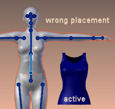
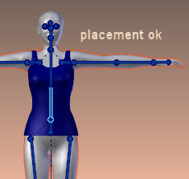

Weight Tools¶
Weight Paint Tools.
Reference
Blender provides a set of helper tools for Weight Painting. The tools are accessible from the Tool Shelf in Weight Paint Mode. And they are located in the weight tools panel.
The Subset Option¶
Some of the tools also provide a Subset filter to restrict their functionality to only specific vertex groups (in the Operator panel, displayed after the tool is called) with following options:
- Active Group
- Selected Pose Bones
- Deform pose Bones
- All Groups
All tools also work with Vertex Selection Masking and Face Selection masking. In these modes the tools operate only on selected vertices or faces.
Tip
About the Blend tool
The Blend tool only works when "Vertex selection masking for painting" is enabled. Otherwise the tool button is grayed out.
Normalize All¶
For each vertex, this tool makes sure that the sum of the weights across all Vertex Groups is equal to 1. This tool normalizes all of the vertex groups, except for locked groups, which keep their weight values untouched.
Options¶
Normalize All Options.
- Lock Active
- Keep the values of the active group while normalizing all the others.
Normalize¶
Normalize All Options.
This tool only works on the active Vertex Group. All vertices keep their relative weights, but the entire set of weights is scaled up such that the highest weight value is 1.0.
Mirror¶
Normalize All Options.
This tool mirrors the weights from one side of the mesh to the opposite side (only mirroring along x-axis is supported). But note, the weights are not transferred to the corresponding opposite bone weight group. The mirror only takes place within the selected Vertex Group.
Options¶
Mirror Options.
- Mirror Weights
- Mirrors the weights of the active group to the other side. Note, this only affects the active weight group.
- Flip Group Names
- Exchange the names of left and right side. This option only renames the groups.
- All Groups
- Operate on all selected bones.
- Topology Mirror
Mirror for meshes which are not 100% symmetric (approximate mirror).
Tip
Mirror to opposite bone
If you want to create a mirrored weight group for the opposite bone (of a symmetric character), then you can do this:
- Delete the target Vertex Group (where the mirrored weights will be placed).
- Create a copy of the source bone Vertex Group (the group containing the weights which you want to copy).
- Rename the new Vertex Group to the name of the target Vertex Group (the group you deleted above).
- Select the Target Vertex Group and call the Mirror tool (use only the Mirror weights option and optionally Topology Mirror if your mesh is not symmetric).
Invert¶
Invert.
Replaces each Weight of the selected weight group by × -1.0 weight.
Examples:
- Original 1.0 converts to 0.0
- Original 0.5 remains 0.5
- Original 0.0 converts to 1.0
Options¶
Invert Options.
- Subset
- Restrict the tool to a subset. See above The Subset Option about how subsets are defined.
- Add Weights
- Add vertices that have no weight before inverting (these weights will all be set to 1.0)
- Remove Weights
- Remove vertices from the Vertex Group if they are 0.0 after inverting.
Note
Locked vertex Groups are not affected.
Clean¶
Invert.
Removes weights below a given threshold. This tool is useful for clearing your weight groups of very low (or zero-) weights.
In the example shown, a cutoff value of 0.139 is used (see operator options below) so all blue parts (left side) are cleaned out (right side).
Note, the images use the Show Zero weights Active option so that unreferenced Weights are shown in Black.
Options¶
Clean Options.
- Subset
- Restrict the tool to a subset. See above The Subset Option for how subsets are defined.
- Limit
- This is the minimum weight value that will be kept in the Group. Weights below this value will be removed from the group.
- Keep Single
- Ensure that the Clean tool will not create completely unreferenced vertices (vertices which are not assigned to any Vertex Group), so each vertex will keep at least one weight, even if it is below the limit value!
Levels¶
Invert.
Adds an offset and a scale to all weights of the selected Weight Groups. with this tool you can raise or lower the overall "heat" of the weight group.
Note
No weight will ever be set to values above 1.0 or below 0.0 regardless of the settings.
Options¶
Levels Options.
- Subset
- Restrict the tool to a subset. See above The Subset Option for how subsets are defined.
- Offset
- A value from the range (-1.0 - 1.0) to be added to all weights in the Vertex Group.
- Gain
- All weights in the Subset are multiplied with the gain.
Note
Whichever Gain and Offset you choose, in all cases the final value of each weight will be clamped to the range (0.0 - 1.0). So you will never get negative weights or overheated areas (weight > 1.0) with this tool.
Smooth¶
Blends the weights of selected vertices with adjacent unselected vertices. This tool only works in vertex select mode.
To understand what the tool really does, let us take a look at a simple example. The selected vertex is connected to four adjacent vertices (marked with a gray circle in the image). All adjacent vertices are unselected. Now the tool calculates the average weight of all connected and unselected vertices. In the example this is:
\((1 + 0 + 0 + 0) / 4 = 0.25\)
This value is multiplied by the factor given in the Operator options (see below).
- If the factor is 0.0 then actually nothing happens at all and the vertex just keeps its value.
- If the factor is 1.0 then the calculated average weight is taken (0.25 here).
- Dragging the factor from 0 to 1 gradually changes from the old value to the calculated average.
Now let us see what happens when we select all but one of the neighbors of the selected vertex as well. Again all connected and unselected vertices are marked with a gray circle. When we call the Smooth tool now and set the Factor to 1.0, then we see different results for each of the selected vertices:
The topmost and bottommost selected vertices:
are surrounded by three unselected vertices, with an average weight of \((1 + 0 + 0) / 3 = 0.333\) So their color has changed to light green.
The middle vertex:
is connected to one unselected vertex with
weight = 1. So the average weight is 1.0 in this case, thus the selected vertex color has changed to red.The right vertex:
is surrounded by three unselected vertices with average weight = \((0 + 0 + 0) / 3 = 0.0\) So the average weight is 0, thus the selected vertex color has not changed at all (it was already blue before Smooth was applied).
Finally let us look at a practical example. The middle edge loop has been selected and it will be used for blending the left side to the right side of the area.
- All selected vertices have two unselected adjacent vertices.
- The average weight of the unselected vertices is \((1 + 0) / 2 = 0.5\)
- Thus when the Factor is set to 1.0 then the edge loop turns to green and finally does blend the cold side (right) to the hot side (left).
Options¶
Smooth Options.
- Factor
- The effective amount of blending. When Factor is set to 0.0 then the Blend tool does not do anything. For Factor > 0 the weights of the affected vertices gradually shift from their original value towards the average weight of all connected and unselected vertices (see examples above).
- Iterations
- ToDo.
- Expand/Contract
- ToDo.
- Source
- ToDo.
Fix Deforms¶
ToDo.
Transfer Weights¶
Copy weights from other objects to the vertex groups of the active Object. By default this tool copies all vertex groups contained in the selected objects to the target object. However, you can change the tool's behavior in the Operator panel (see below).
Prepare the Copy¶

Blending. |

Blending. |
You first select all source objects, and finally the target object (the target object must be the active object).
It is important that the source objects and the target object are at the same location. If they are placed side by side, then the weight transfer will not work. You can place the objects on different layers, but you have to ensure that all objects are visible when you call the tool.
Now ensure that the Target Object is in Weight Paint Mode.
Call the Tool¶
Open the Tool Shelf and locate the Weight Tools panel. From there call the "Transfer weights" tool. The tool will initially copy all vertex groups from the source objects. However, the tool also has an Operator panel (which appears at the bottom of the tool shelf). From the Operator panel you can change the parameters to meet your needs. (The available Operator parameters are documented below.)
Operator Panel Confusion¶
You may notice that the Operator panel (see below) stays available after the weight transfer is done. The panel only disappears when you call another Operator that has its own Operator panel. This can lead to confusion when you use Transfer weights repeatedly after you changed your vertex groups. If you then use the still-visible Operator panel, then Blender will reset your work to its state right before you initially called the Transfer Weights tool.
Workaround¶
When you want to call the Transfer Weights tool again after you made some changes to your vertex groups, then always use the "Transfer Weights" Button, even if the operator panel is still available. Unless you really want to reset your changes to the initial call of the tool.
Options¶
Note
This tool now uses the generic 'data transfer' one. Please refer to the Data Transfer docs for options details and explanations.
Limit Total¶
Reduce the number of weight groups per vertex to the specified Limit. The tool removes lowest weights first until the limit is reached.
Hint
The tool can only work reasonably when more than one weight group is selected.
Options¶
- Subset
- Restrict the tool to a subset. See above The Subset Option for how subsets are defined.
- Limit
- Maximum number of weights allowed on each vertex.
Weight Gradient¶
{kind=link}
Example of the gradient tool being used with selected vertices.
This is an interactive tool for applying a linear/radial weight gradient; this is useful at times when painting gradual changes in weight becomes difficult.
The gradient tool can be accessed from the Tool Shelf or as a key shortcut:
- Linear:
Alt-LMBand drag. - Radial:
Alt-Ctrl-LMBand drag.
The following weight paint options are used to control the gradient:
- Weight
- The gradient starts at the current selected weight value, blending out to nothing.
- Strength
- Lower values can be used so the gradient mixes in with the existing weights (just like with the brush).
- Curve
- The brush falloff curve applies to the gradient too, so you can use this to adjust the blending.
Blends the weights of selected vertices with unselected vertices.
Hint
This tool only works in vertex select mode.
Options¶
- Type
- Linear
- Radial
Assign¶
- Assign from Bone Envelopes
- Applies the envelope weight of the select the bone(s) to the selected vertex group.
- Assign Automatic from Bone
- Apply from the selected bone(s) to the vertex group the same "auto-weighting" methods as available in the Parent armature menu.